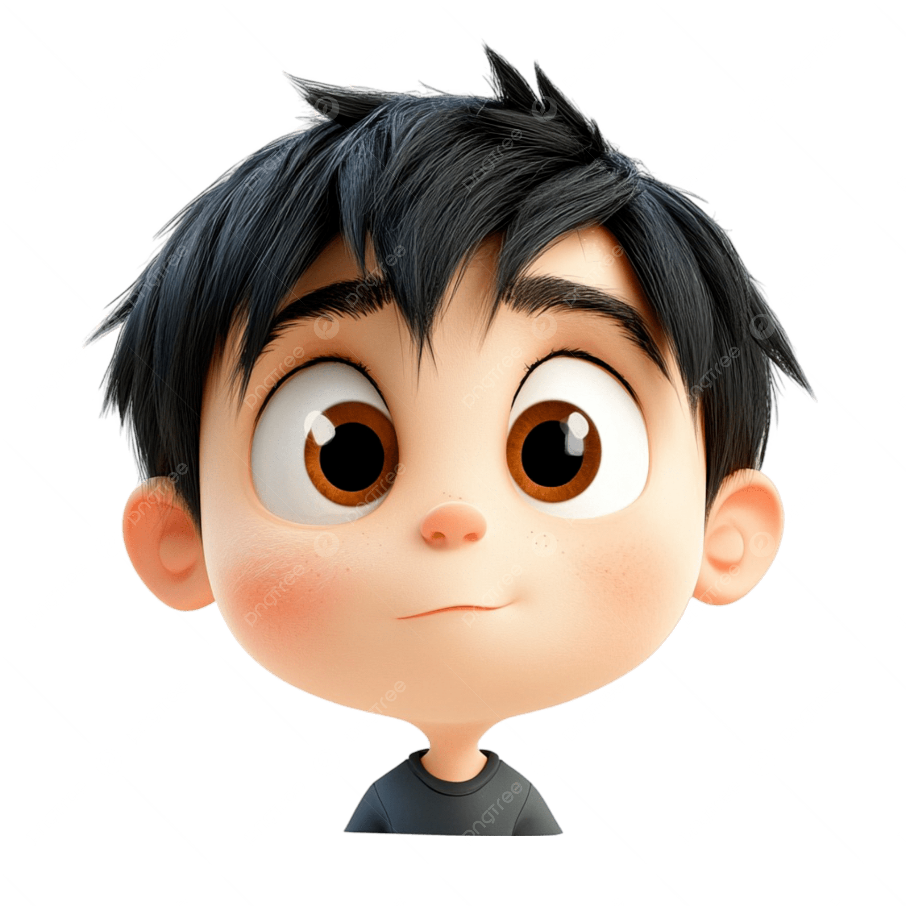

Привіт! Мене звати Денис.
Я — початківець розробник та ентузіаст ІТ-технологій, який робить перші кроки у створенні сучасних вебрішень. Мені подобається досліджувати, як працюють сайти, програми та інтерфейси, і перетворювати ідеї на щось, що справді працює.
На цьому сайті ви знайдете мої перші роботи, думки та інформацію про навички, які я активно розвиваю. Запрошую у свій світ технологій!

Мій підхід до роботи
Я ставлюся до роботи просто: усе має бути зрозумілим, логічним і корисним. Мені важливо не просто зробити щось, а зробити так, щоб воно працювало без зайвих складностей. Я люблю вчитися новому, експериментувати та знаходити рішення, які дійсно мають сенс.